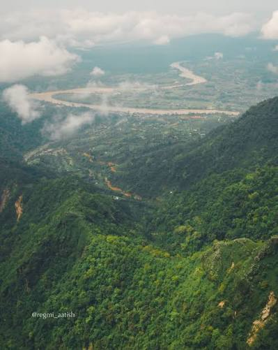
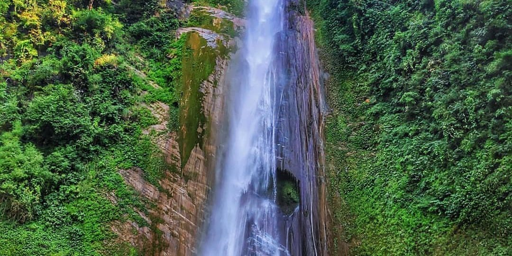

Discover the trails, hills and natural adventures around Bharatpur.
Chauki Danda is a scenic outdoor destination where visitors can enjoy hiking, fresh air and beautiful views of the surrounding landscape. The peaceful environment and natural trails make it a refreshing destination for those looking for a short adventure away from the city.

Jalbire Jharana is a popular waterfall destination offering a combination of hiking, nature and adventure. Visitors can follow the trail to the waterfall, enjoy the surrounding greenery and spend time in the refreshing natural environment. It is a great choice for an outdoor day trip.
